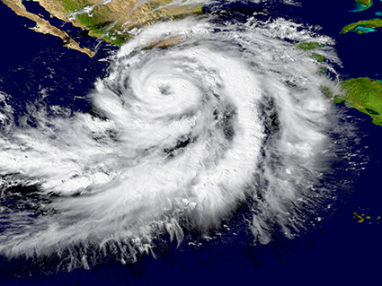
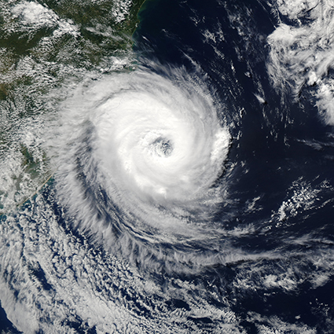
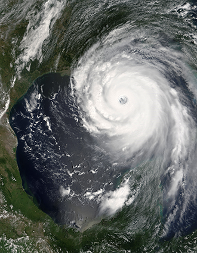
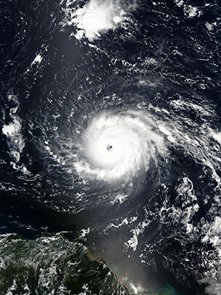

O furação Patrícia foi considerado o mais forte ciclone já registrado em águas do hemisfério Ocidental, no oceano Pacífico ocidental da Terra. Na imagem observamos o furacão Patrícia, em 2015. Crédito: HARVEPINO/SHUTTERSTOCK.COM

Devido à força de Coriolis, os furacões formados no hemisfério Sul apresentam a movimentação dos ventos no sentido horário, como podemos observar na imagem do furacão Catarina, em 2004. Crédito: GSFC/NASA

Devido à força de Coriolis, os furacões formados no hemisfério Norte apresentam a movimentação dos ventos no sentido anti-horário, como podemos observar na imagem do furacão Katrina, em 2005.
Crédito: GSFC/NASA

O furacão Irma, mostrado na imagem de 2017, é considerado a mais forte tempestade tropical que se tem registro no oceano Atlântico.